Simulate Data from a State Space Model (Fixed Parameters)
Source:R/simStateSpace-sim-ssm-fixed.R
SimSSMFixed.RdThis function simulates data using a state space model. It assumes that the parameters remain constant across individuals and over time.
Usage
SimSSMFixed(
n,
time,
delta_t = 1,
mu0,
sigma0_l,
alpha,
beta,
psi_l,
nu,
lambda,
theta_l,
type = 0,
x = NULL,
gamma = NULL,
kappa = NULL
)Arguments
- n
Positive integer. Number of individuals.
- time
Positive integer. Number of time points.
- delta_t
Numeric. Time interval. The default value is
1.0with an option to use a numeric value for the discretized state space model parameterization of the linear stochastic differential equation model.- mu0
Numeric vector. Mean of initial latent variable values (\(\boldsymbol{\mu}_{\boldsymbol{\eta} \mid 0}\)).
- sigma0_l
Numeric matrix. Cholesky factorization (
t(chol(sigma0))) of the covariance matrix of initial latent variable values (\(\boldsymbol{\Sigma}_{\boldsymbol{\eta} \mid 0}\)).- alpha
Numeric vector. Vector of constant values for the dynamic model (\(\boldsymbol{\alpha}\)).
- beta
Numeric matrix. Transition matrix relating the values of the latent variables at the previous to the current time point (\(\boldsymbol{\beta}\)).
- psi_l
Numeric matrix. Cholesky factorization (
t(chol(psi))) of the covariance matrix of the process noise (\(\boldsymbol{\Psi}\)).- nu
Numeric vector. Vector of intercept values for the measurement model (\(\boldsymbol{\nu}\)).
- lambda
Numeric matrix. Factor loading matrix linking the latent variables to the observed variables (\(\boldsymbol{\Lambda}\)).
- theta_l
Numeric matrix. Cholesky factorization (
t(chol(theta))) of the covariance matrix of the measurement error (\(\boldsymbol{\Theta}\)).- type
Integer. State space model type. See Details for more information.
- x
List. Each element of the list is a matrix of covariates for each individual
iinn. The number of columns in each matrix should be equal totime.- gamma
Numeric matrix. Matrix linking the covariates to the latent variables at current time point (\(\boldsymbol{\Gamma}\)).
- kappa
Numeric matrix. Matrix linking the covariates to the observed variables at current time point (\(\boldsymbol{\kappa}\)).
Value
Returns an object of class simstatespace
which is a list with the following elements:
call: Function call.args: Function arguments.data: Generated data which is a list of lengthn. Each element ofdatais a list with the following elements:id: A vector of ID numbers with lengthl, wherelis the value of the function argumenttime.time: A vector time points of lengthl.y: Albykmatrix of values for the manifest variables.eta: Albypmatrix of values for the latent variables.x: Albyjmatrix of values for the covariates (when covariates are included).
fun: Function used.
Details
Type 0
The measurement model is given by $$ \mathbf{y}_{i, t} = \boldsymbol{\nu} + \boldsymbol{\Lambda} \boldsymbol{\eta}_{i, t} + \boldsymbol{\varepsilon}_{i, t}, \quad \mathrm{with} \quad \boldsymbol{\varepsilon}_{i, t} \sim \mathcal{N} \left( \mathbf{0}, \boldsymbol{\Theta} \right) $$ where \(\mathbf{y}_{i, t}\), \(\boldsymbol{\eta}_{i, t}\), and \(\boldsymbol{\varepsilon}_{i, t}\) are random variables and \(\boldsymbol{\nu}\), \(\boldsymbol{\Lambda}\), and \(\boldsymbol{\Theta}\) are model parameters. \(\mathbf{y}_{i, t}\) represents a vector of observed random variables, \(\boldsymbol{\eta}_{i, t}\) a vector of latent random variables, and \(\boldsymbol{\varepsilon}_{i, t}\) a vector of random measurement errors, at time \(t\) and individual \(i\). \(\boldsymbol{\nu}\) denotes a vector of intercepts, \(\boldsymbol{\Lambda}\) a matrix of factor loadings, and \(\boldsymbol{\Theta}\) the covariance matrix of \(\boldsymbol{\varepsilon}\).
An alternative representation of the measurement error is given by $$ \boldsymbol{\varepsilon}_{i, t} = \boldsymbol{\Theta}^{\frac{1}{2}} \mathbf{z}_{i, t}, \quad \mathrm{with} \quad \mathbf{z}_{i, t} \sim \mathcal{N} \left( \mathbf{0}, \mathbf{I} \right) $$ where \(\mathbf{z}_{i, t}\) is a vector of independent standard normal random variables and \( \left( \boldsymbol{\Theta}^{\frac{1}{2}} \right) \left( \boldsymbol{\Theta}^{\frac{1}{2}} \right)^{\prime} = \boldsymbol{\Theta} . \)
The dynamic structure is given by $$ \boldsymbol{\eta}_{i, t} = \boldsymbol{\alpha} + \boldsymbol{\beta} \boldsymbol{\eta}_{i, t - 1} + \boldsymbol{\zeta}_{i, t}, \quad \mathrm{with} \quad \boldsymbol{\zeta}_{i, t} \sim \mathcal{N} \left( \mathbf{0}, \boldsymbol{\Psi} \right) $$ where \(\boldsymbol{\eta}_{i, t}\), \(\boldsymbol{\eta}_{i, t - 1}\), and \(\boldsymbol{\zeta}_{i, t}\) are random variables, and \(\boldsymbol{\alpha}\), \(\boldsymbol{\beta}\), and \(\boldsymbol{\Psi}\) are model parameters. Here, \(\boldsymbol{\eta}_{i, t}\) is a vector of latent variables at time \(t\) and individual \(i\), \(\boldsymbol{\eta}_{i, t - 1}\) represents a vector of latent variables at time \(t - 1\) and individual \(i\), and \(\boldsymbol{\zeta}_{i, t}\) represents a vector of dynamic noise at time \(t\) and individual \(i\). \(\boldsymbol{\alpha}\) denotes a vector of intercepts, \(\boldsymbol{\beta}\) a matrix of autoregression and cross regression coefficients, and \(\boldsymbol{\Psi}\) the covariance matrix of \(\boldsymbol{\zeta}_{i, t}\).
An alternative representation of the dynamic noise is given by $$ \boldsymbol{\zeta}_{i, t} = \boldsymbol{\Psi}^{\frac{1}{2}} \mathbf{z}_{i, t}, \quad \mathrm{with} \quad \mathbf{z}_{i, t} \sim \mathcal{N} \left( \mathbf{0}, \mathbf{I} \right) $$ where \( \left( \boldsymbol{\Psi}^{\frac{1}{2}} \right) \left( \boldsymbol{\Psi}^{\frac{1}{2}} \right)^{\prime} = \boldsymbol{\Psi} . \)
Type 1
The measurement model is given by $$ \mathbf{y}_{i, t} = \boldsymbol{\nu} + \boldsymbol{\Lambda} \boldsymbol{\eta}_{i, t} + \boldsymbol{\varepsilon}_{i, t}, \quad \mathrm{with} \quad \boldsymbol{\varepsilon}_{i, t} \sim \mathcal{N} \left( \mathbf{0}, \boldsymbol{\Theta} \right) . $$
The dynamic structure is given by $$ \boldsymbol{\eta}_{i, t} = \boldsymbol{\alpha} + \boldsymbol{\beta} \boldsymbol{\eta}_{i, t - 1} + \boldsymbol{\Gamma} \mathbf{x}_{i, t} + \boldsymbol{\zeta}_{i, t}, \quad \mathrm{with} \quad \boldsymbol{\zeta}_{i, t} \sim \mathcal{N} \left( \mathbf{0}, \boldsymbol{\Psi} \right) $$ where \(\mathbf{x}_{i, t}\) represents a vector of covariates at time \(t\) and individual \(i\), and \(\boldsymbol{\Gamma}\) the coefficient matrix linking the covariates to the latent variables.
Type 2
The measurement model is given by $$ \mathbf{y}_{i, t} = \boldsymbol{\nu} + \boldsymbol{\Lambda} \boldsymbol{\eta}_{i, t} + \boldsymbol{\kappa} \mathbf{x}_{i, t} + \boldsymbol{\varepsilon}_{i, t}, \quad \mathrm{with} \quad \boldsymbol{\varepsilon}_{i, t} \sim \mathcal{N} \left( \mathbf{0}, \boldsymbol{\Theta} \right) $$ where \(\boldsymbol{\kappa}\) represents the coefficient matrix linking the covariates to the observed variables.
The dynamic structure is given by $$ \boldsymbol{\eta}_{i, t} = \boldsymbol{\alpha} + \boldsymbol{\beta} \boldsymbol{\eta}_{i, t - 1} + \boldsymbol{\Gamma} \mathbf{x}_{i, t} + \boldsymbol{\zeta}_{i, t}, \quad \mathrm{with} \quad \boldsymbol{\zeta}_{i, t} \sim \mathcal{N} \left( \mathbf{0}, \boldsymbol{\Psi} \right) . $$
References
Chow, S.-M., Ho, M. R., Hamaker, E. L., & Dolan, C. V. (2010). Equivalence and differences between structural equation modeling and state-space modeling techniques. Structural Equation Modeling: A Multidisciplinary Journal, 17(2), 303–332. doi:10.1080/10705511003661553
See also
Other Simulation of State Space Models Data Functions:
LinSDE2SSM(),
LinSDECovEta(),
LinSDECovY(),
LinSDEMeanEta(),
LinSDEMeanY(),
ProjectToHurwitz(),
ProjectToStability(),
SSMCovEta(),
SSMCovY(),
SSMMeanEta(),
SSMMeanY(),
SimAlphaN(),
SimBetaN(),
SimBetaN2(),
SimBetaNCovariate(),
SimCovDiagN(),
SimCovN(),
SimIotaN(),
SimNuN(),
SimPhiN(),
SimPhiN2(),
SimPhiNCovariate(),
SimSSMIVary(),
SimSSMLinGrowth(),
SimSSMLinGrowthIVary(),
SimSSMLinSDEFixed(),
SimSSMLinSDEIVary(),
SimSSMOUFixed(),
SimSSMOUIVary(),
SimSSMVARFixed(),
SimSSMVARIVary(),
SpectralRadius(),
TestPhi(),
TestPhiHurwitz(),
TestStability(),
TestStationarity()
Examples
# prepare parameters
set.seed(42)
## number of individuals
n <- 5
## time points
time <- 50
## dynamic structure
p <- 3
mu0 <- rep(x = 0, times = p)
sigma0 <- 0.001 * diag(p)
sigma0_l <- t(chol(sigma0))
alpha <- rep(x = 0, times = p)
beta <- 0.50 * diag(p)
psi <- 0.001 * diag(p)
psi_l <- t(chol(psi))
## measurement model
k <- 3
nu <- rep(x = 0, times = k)
lambda <- diag(k)
theta <- 0.001 * diag(k)
theta_l <- t(chol(theta))
## covariates
j <- 2
x <- lapply(
X = seq_len(n),
FUN = function(i) {
matrix(
data = stats::rnorm(n = time * j),
nrow = j,
ncol = time
)
}
)
gamma <- diag(x = 0.10, nrow = p, ncol = j)
kappa <- diag(x = 0.10, nrow = k, ncol = j)
# Type 0
ssm <- SimSSMFixed(
n = n,
time = time,
mu0 = mu0,
sigma0_l = sigma0_l,
alpha = alpha,
beta = beta,
psi_l = psi_l,
nu = nu,
lambda = lambda,
theta_l = theta_l,
type = 0
)
plot(ssm)
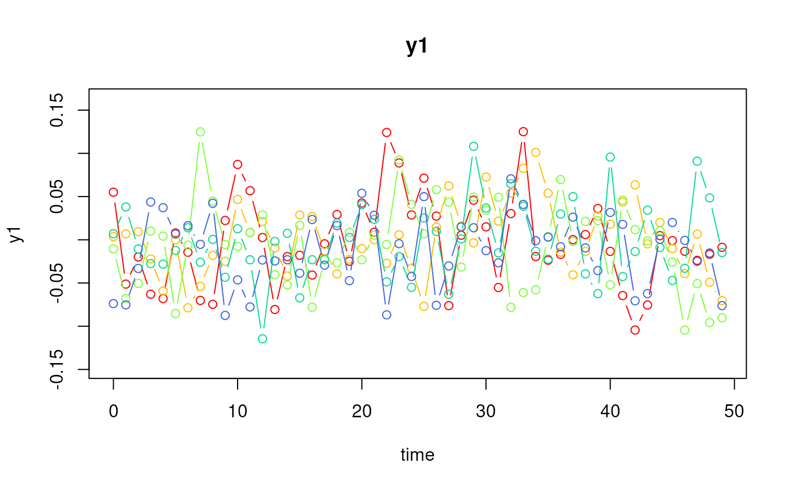
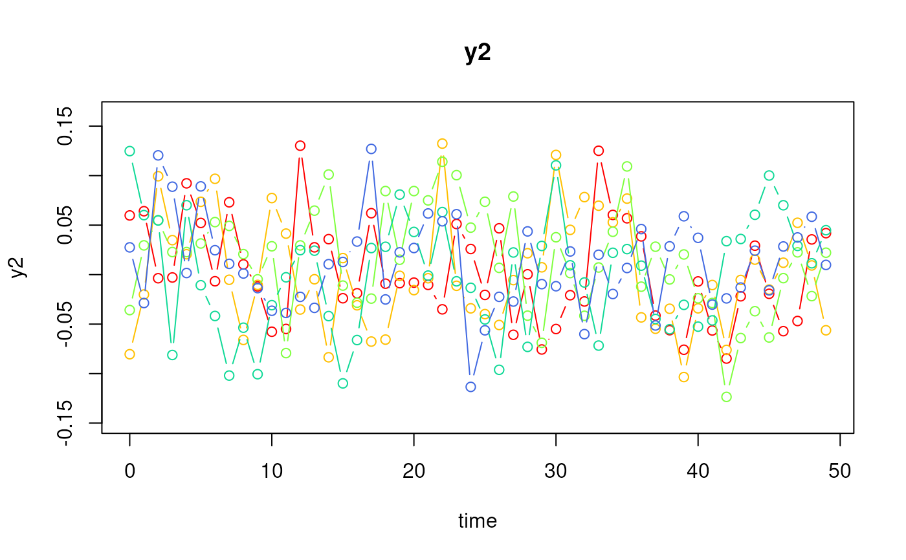
 # Type 1
ssm <- SimSSMFixed(
n = n,
time = time,
mu0 = mu0,
sigma0_l = sigma0_l,
alpha = alpha,
beta = beta,
psi_l = psi_l,
nu = nu,
lambda = lambda,
theta_l = theta_l,
type = 1,
x = x,
gamma = gamma
)
plot(ssm)
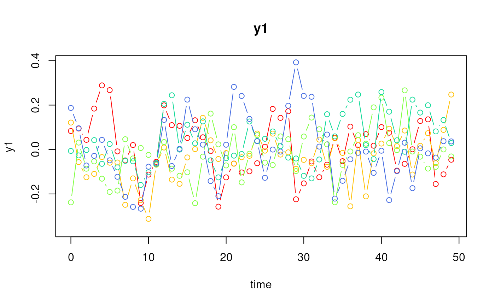
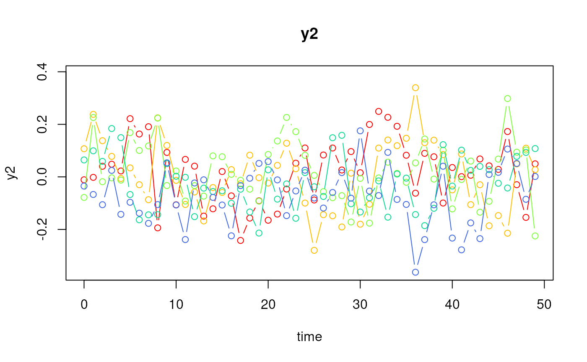
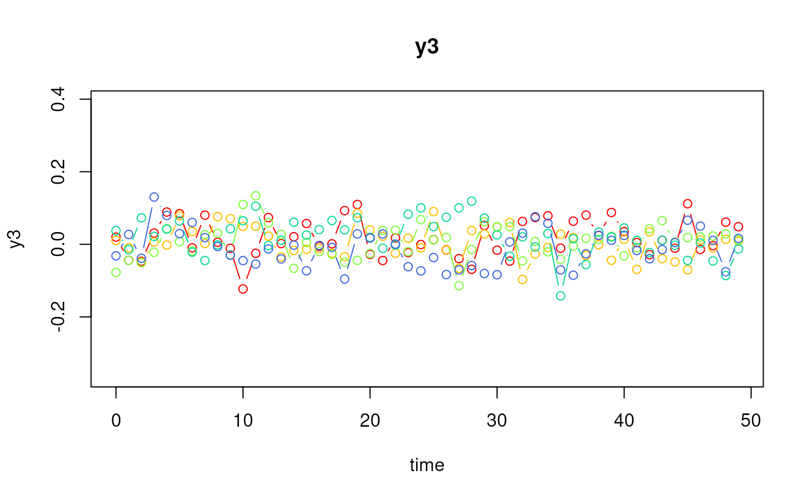
# Type 2
ssm <- SimSSMFixed(
n = n,
time = time,
mu0 = mu0,
sigma0_l = sigma0_l,
alpha = alpha,
beta = beta,
psi_l = psi_l,
nu = nu,
lambda = lambda,
theta_l = theta_l,
type = 2,
x = x,
gamma = gamma,
kappa = kappa
)
plot(ssm)
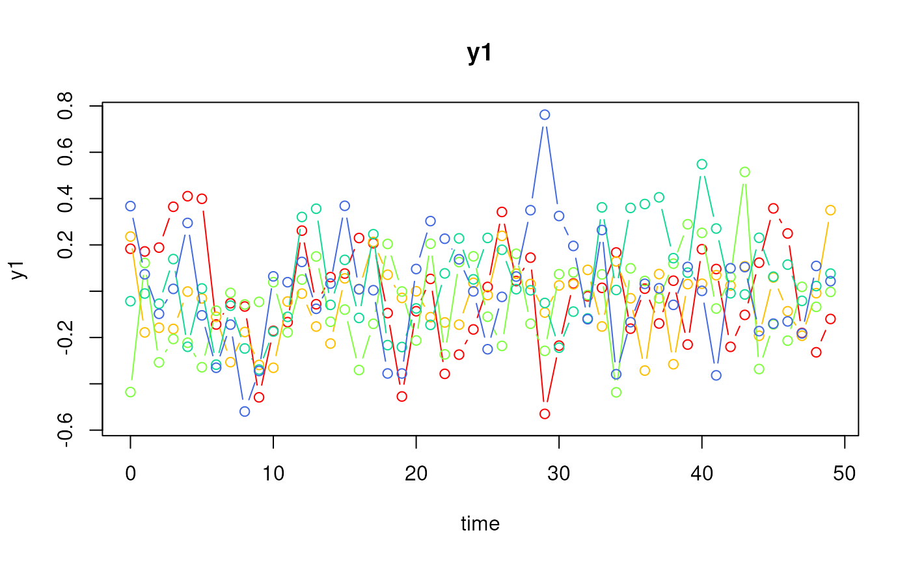
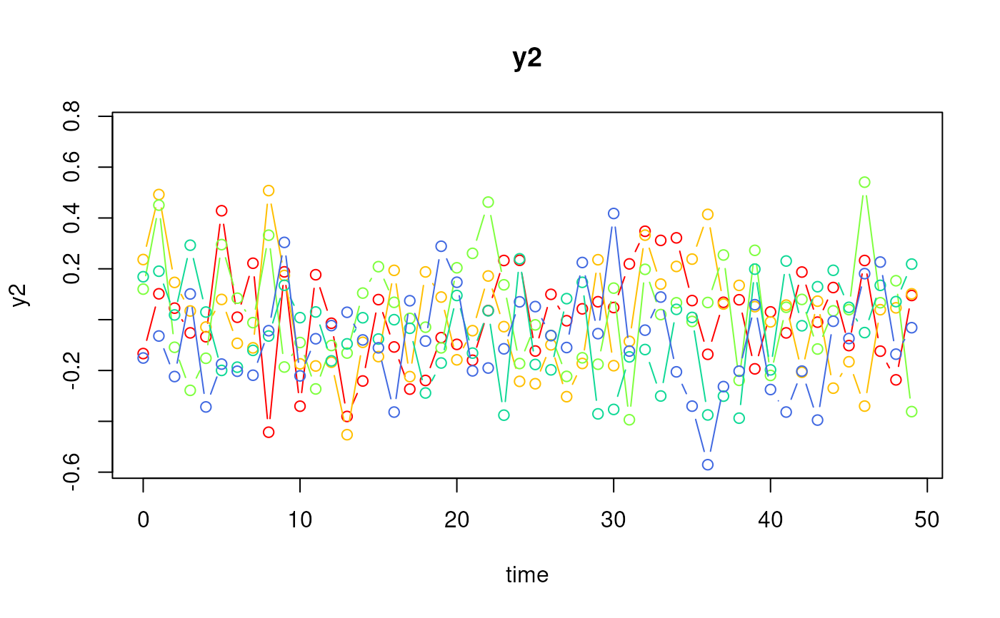
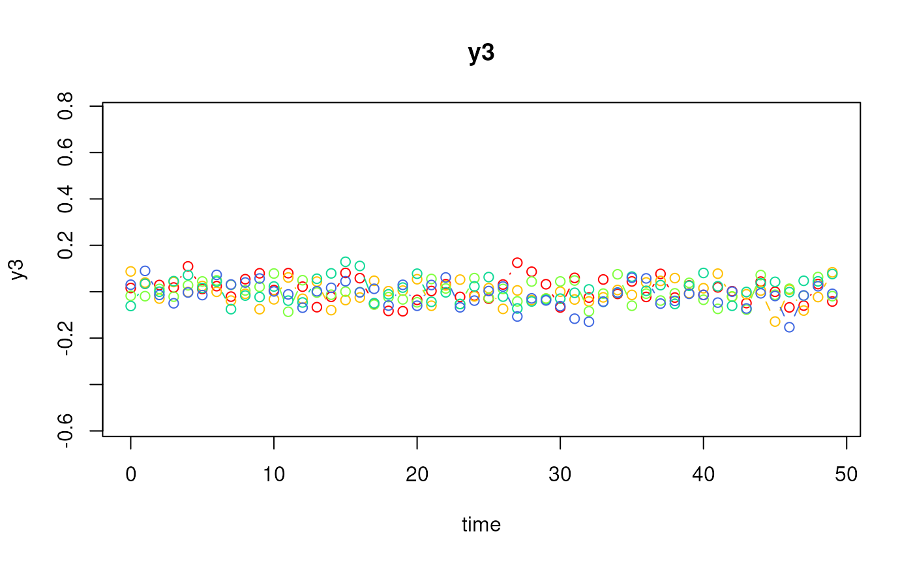
# Type 1
ssm <- SimSSMFixed(
n = n,
time = time,
mu0 = mu0,
sigma0_l = sigma0_l,
alpha = alpha,
beta = beta,
psi_l = psi_l,
nu = nu,
lambda = lambda,
theta_l = theta_l,
type = 1,
x = x,
gamma = gamma
)
plot(ssm)
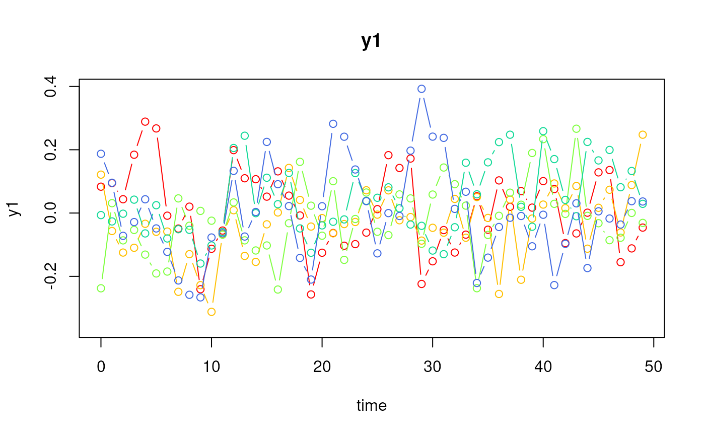
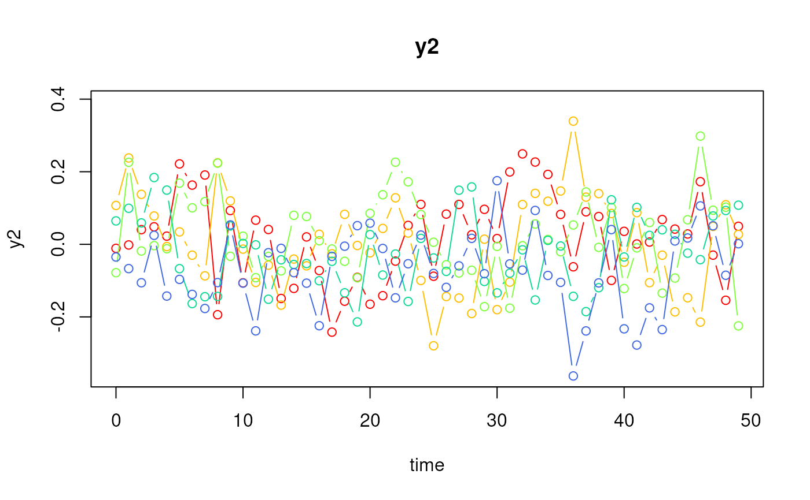
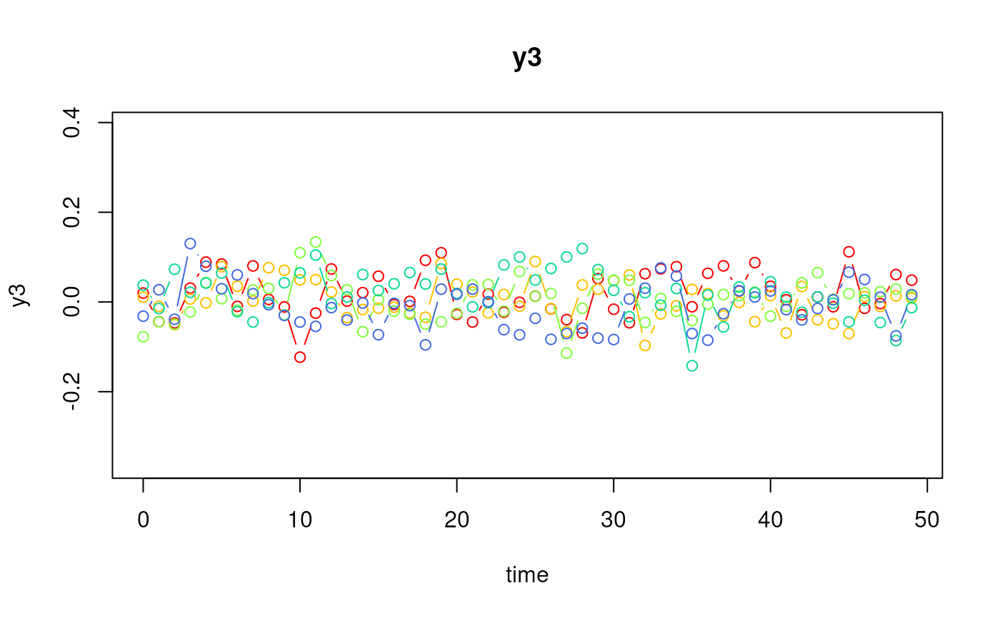
# Type 2
ssm <- SimSSMFixed(
n = n,
time = time,
mu0 = mu0,
sigma0_l = sigma0_l,
alpha = alpha,
beta = beta,
psi_l = psi_l,
nu = nu,
lambda = lambda,
theta_l = theta_l,
type = 2,
x = x,
gamma = gamma,
kappa = kappa
)
plot(ssm)
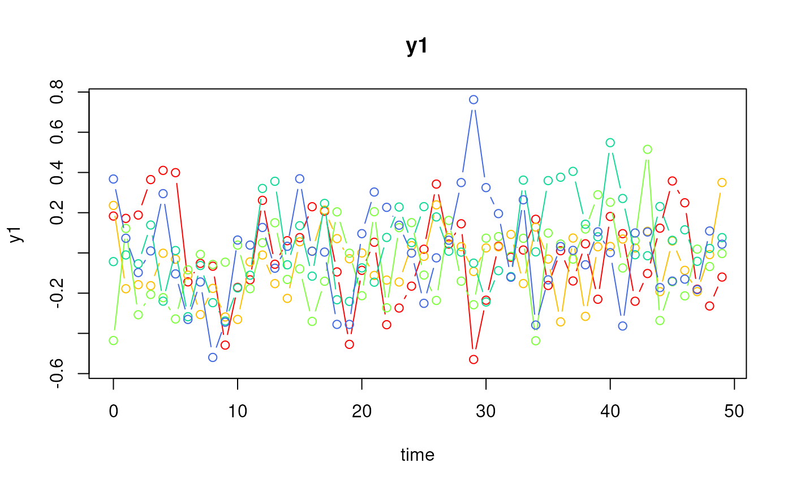
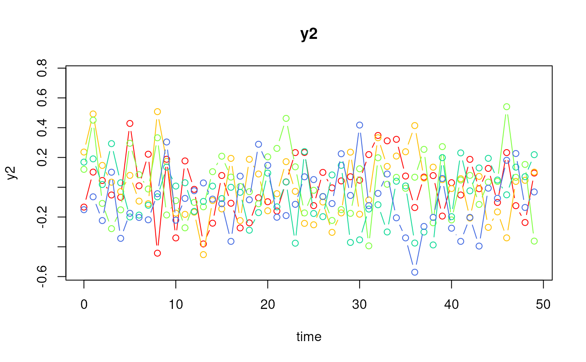
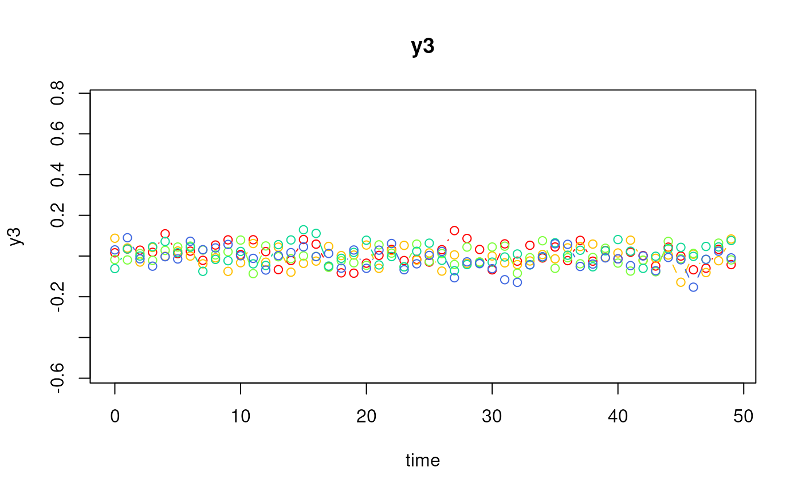